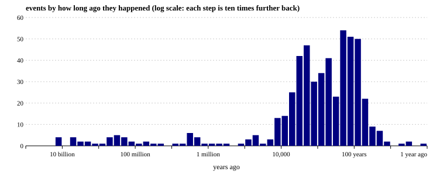
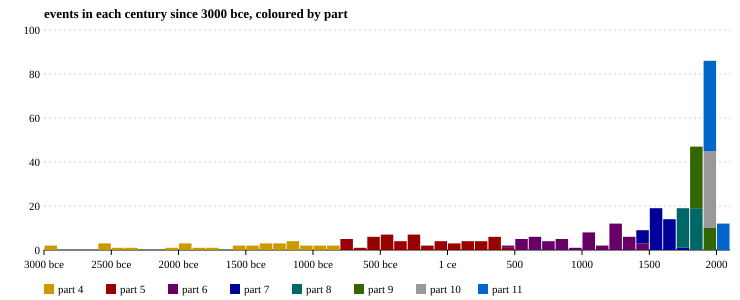

home > statistics
numbers about this site. the tables further down come straight from sql queries run against the site's own sqlite database every time the site is built.
| part | words | events | people | terms | words, as a bar |
|---|---|---|---|---|---|
| 1. the beginning | 2,626 | 34 | 0 | 13 | ############################# |
| 2. the first humans | 2,394 | 34 | 4 | 8 | ########################### |
| 3. the first farmers | 1,749 | 28 | 0 | 10 | #################### |
| 4. the first civilizations | 2,894 | 44 | 12 | 20 | ################################ |
| 5. the classical world | 3,128 | 64 | 38 | 12 | ################################### |
| 6. the middle ages | 3,581 | 68 | 35 | 14 | ######################################## |
| 7. the early modern world | 3,024 | 52 | 34 | 18 | ################################## |
| 8. the age of revolutions | 2,630 | 49 | 21 | 8 | ############################# |
| 9. industry and empire | 2,625 | 50 | 23 | 11 | ############################# |
| 10. the world wars | 2,743 | 40 | 13 | 12 | ############################### |
| 11. the modern world | 2,914 | 68 | 25 | 13 | ################################# |
these charts are drawn by a small c++ program (tools/chart.cpp) from the timeline file. point at a bar to see its numbers.


| europe | 142 | ######################################## |
| africa | 67 | ################### |
| the middle east | 60 | ################# |
| east asia | 51 | ############## |
| north america | 47 | ############# |
| the whole world | 44 | ############ |
| south asia | 25 | ####### |
| mesoamerica and the caribbean | 19 | ##### |
| southeast asia | 18 | ##### |
| oceania | 17 | ##### |
| south america | 16 | ##### |
| central asia | 10 | ### |
| the universe | 9 | ### |
| the arctic and antarctica | 6 | ## |
| war | 101 | ######################################## |
| empire | 77 | ############################## |
| religion | 46 | ################## |
| technology | 42 | ################# |
| science | 33 | ############# |
| humans | 30 | ############ |
| politics | 30 | ############ |
| rights | 27 | ########### |
| trade | 26 | ########## |
| revolution | 22 | ######### |
| migration | 21 | ######## |
| exploration | 21 | ######## |
| disaster | 19 | ######## |
| farming | 19 | ######## |
| architecture | 17 | ####### |
| cities | 17 | ####### |
| writing | 17 | ####### |
| environment | 16 | ###### |
| life | 15 | ###### |
| art | 15 | ###### |
| law | 15 | ###### |
| medicine | 13 | ##### |
| diplomacy | 12 | ##### |
| economy | 11 | #### |
| collapse | 10 | #### |
the longest times since 3000 bce when nothing on the timeline was happening: the gap between the end of everything so far and the start of the next event. found by an awk script (tools/gaps.awk). quiet here only means this site has no event for it, not that nothing happened.
| years | after | and before |
|---|---|---|
| 350 | c. 3000 bce: the first stage of stonehenge, a circular ditch and bank, is dug in southern britain | c. 2650 bce: the architect imhotep builds the step pyramid of djoser at saqqara, the first large building made entirely of stone |
| 234 | c. 2334 bce: sargon of akkad conquers the sumerian cities and builds what is often called the first empire | c. 2100 bce: ur-nammu of ur issues the oldest surviving law code; the first poems about gilgamesh are written down |
| 166 | c. 2500 bce: kerma, the first kingdom of kush, flourishes on the nile in what is now sudan | c. 2334 bce: sargon of akkad conquers the sumerian cities and builds what is often called the first empire |
| 154 | c. 1754 bce: hammurabi of babylon has 282 laws carved on a stone pillar, the famous code of hammurabi | c. 1600 bce: the shang dynasty takes power along the yellow river, the first chinese dynasty with written records |
| 110 | 722 bce: the assyrian empire destroys the northern kingdom of israel and deports much of its population | 612 bce: babylonians and medes sack nineveh, and the assyrian empire collapses |
| 100 | c. 2100 bce: ur-nammu of ur issues the oldest surviving law code; the first poems about gilgamesh are written down | c. 2000 bce: minoan palaces rise on crete, centered on knossos |
| 100 | c. 2000 bce: minoan palaces rise on crete, centered on knossos | c. 1900 bce: the indus cities go into decline as rivers shift and the climate dries |
| 100 | c. 1600 bce: the shang dynasty takes power along the yellow river, the first chinese dynasty with written records | c. 1500 bce: indo-aryan speaking peoples settle in northern india; the rigveda, oldest of the vedas, is composed |
| 100 | c. 1200–1150 bce: the bronze age collapse: the hittite empire, mycenaean greece, and many cities of the eastern mediterranean fall | c. 1050 bce: the phoenicians use an alphabet of 22 letters, the ancestor of the greek, latin, hebrew, and arabic scripts |
| 100 | c. 1000 bce: david rules a kingdom of israel from jerusalem; his son solomon is said to build the first temple | c. 900 bce: the temple center of chavín de huántar spreads a shared religion and art style through the andes |
single years with more than one event on the timeline (from the same awk script).
| year | events | what happened |
|---|---|---|
| 1945 | 5 | soviet troops liberate auschwitz; hitler kills himself; germany surrenders in may the united states drops atomic bombs on hiroshima and nagasaki; japan surrenders the united nations is founded sukarno declares indonesia independent; the dutch fight to hold on until 1949 ho chi minh declares the independence of vietnam; war with france follows |
| 1869 | 3 | the suez canal opens, linking the mediterranean and the red sea the first transcontinental railroad across the united states is completed dmitri mendeleev publishes the periodic table of the elements |
| 1948 | 3 | the state of israel is founded; the first arab-israeli war follows and about 700,000 palestinians flee or are expelled the un adopts the universal declaration of human rights south africa's government begins the system of apartheid |
| 1962 | 3 | the cuban missile crisis brings the world close to nuclear war algeria wins independence from france after an eight-year war rachel carson's silent spring warns about pesticides and helps start the modern environmental movement |
| 1989 | 3 | the berlin wall falls as communist governments collapse across eastern europe the chinese army crushes protests in and around tiananmen square tim berners-lee proposes the world wide web at cern; it goes public in 1991 |
| 1206 | 2 | temüjin unites the mongol tribes and is proclaimed genghis khan the delhi sultanate is founded by turkic muslim rulers in northern india |
| 1492 | 2 | christopher columbus, sailing for spain, reaches the caribbean granada, the last muslim state in spain, falls; spain expels its jews |
| 1776 | 2 | the thirteen colonies declare independence from britain adam smith publishes the wealth of nations |
| 1793 | 2 | louis xvi is executed; the reign of terror begins the qianlong emperor turns away a british embassy asking for more trade, writing that china needs nothing from britain |
| 1815 | 2 | napoleon is defeated at waterloo; the congress of vienna redraws europe mount tambora in indonesia erupts; the next year is the "year without a summer" |
| 1848 | 2 | revolutions break out across europe; marx and engels publish the communist manifesto the seneca falls convention demands equal rights for women, including the vote |
| 1859 | 2 | charles darwin publishes on the origin of species the first commercial oil well is drilled in pennsylvania, beginning the age of oil |
the people who were alive at the same time as the most other people on this site (counting only people whose birth and death years are known). worked out by a c# program (tools/contemporaries.cs); see the people page for who overlapped with whom.
| person | lived | alive at the same time as |
|---|---|---|
| thomas edison | 1847–1931 | 54 others |
| mahatma gandhi | 1869–1948 | 54 others |
| winston churchill | 1874–1965 | 54 others |
| joseph stalin | 1878–1953 | 54 others |
| lise meitner | 1878–1968 | 54 others |
| albert einstein | 1879–1955 | 54 others |
| mustafa kemal atatürk | 1881–1938 | 53 others |
| franklin d. roosevelt | 1882–1945 | 53 others |
| benito mussolini | 1883–1945 | 52 others |
| adolf hitler | 1889–1945 | 52 others |
the centuries with the most events on the timeline (deep time left out).
| century | events |
|---|---|
| 20th century | 106 |
| 19th century | 66 |
| 18th century | 24 |
| 16th century | 22 |
| 17th century | 20 |
| 13th century | 13 |
| 21st century | 13 |
| 15th century | 12 |
| 11th century | 10 |
| 3rd century bce | 10 |
| 14th century | 9 |
| 7th century | 9 |
select century_label(century) as century, count(*) as events from events where century is not null group by century order by events desc, century limit 12;
how the timeline is spread across the eleven parts.
| part | title | events | percent |
|---|---|---|---|
| 1 | the beginning | 34 | 6.4 |
| 2 | the first humans | 34 | 6.4 |
| 3 | the first farmers | 28 | 5.3 |
| 4 | the first civilizations | 44 | 8.3 |
| 5 | the classical world | 64 | 12.1 |
| 6 | the middle ages | 68 | 12.8 |
| 7 | the early modern world | 52 | 9.8 |
| 8 | the age of revolutions | 49 | 9.2 |
| 9 | industry and empire | 50 | 9.4 |
| 10 | the world wars | 40 | 7.5 |
| 11 | the modern world | 68 | 12.8 |
select er.number as part, er.title as title, count(e.id) as events,
round(100.0 * count(e.id) / (select count(*) from events), 1) as percent
from eras er
left join events e on e.era = er.slug
group by er.slug
order by er.number;which region has the most events in each part.
| part | title | top region | events |
|---|---|---|---|
| 1 | the beginning | the whole world | 20 |
| 2 | the first humans | africa | 13 |
| 3 | the first farmers | the middle east | 9 |
| 4 | the first civilizations | the middle east | 13 |
| 5 | the classical world | europe | 24 |
| 6 | the middle ages | europe | 14 |
| 7 | the early modern world | europe | 21 |
| 8 | the age of revolutions | europe | 22 |
| 9 | industry and empire | europe | 14 |
| 10 | the world wars | europe | 20 |
| 11 | the modern world | north america | 11 |
with counts as (
select e.era, e.region, count(*) as n,
row_number() over (partition by e.era order by count(*) desc, e.region) as rank
from events e
group by e.era, e.region
)
select er.number as part, er.title as title, r.name as top_region, c.n as events
from counts c
join eras er on er.slug = c.era
join regions r on r.slug = c.region
where c.rank = 1
order by er.number;the people on this site who lived the longest (where both dates are known).
| name | dates | years |
|---|---|---|
| jayavarman vii | c. 1122–1218 | 96 |
| nelson mandela | 1918–2013 | 95 |
| norman borlaug | 1914–2009 | 95 |
| deng xiaoping | 1904–1997 | 93 |
| rosa parks | 1913–2005 | 92 |
| harriet tubman | c. 1822–1913 | 91 |
| mikhail gorbachev | 1931–2022 | 91 |
| winston churchill | 1874–1965 | 91 |
| fidel castro | 1926–2016 | 90 |
| florence nightingale | 1820–1910 | 90 |
select name, dates, cast(died - born as integer) as years from people where life_known = 1 order by years desc, name limit 10;
glossary terms that show up in the most parts.
| term | parts |
|---|---|
| dna | 6 |
| radiocarbon dating | 3 |
| alphabet | 2 |
| big bang | 2 |
| bronze age collapse | 2 |
| enlightenment | 2 |
| extinction | 2 |
| genocide | 2 |
| globalization | 2 |
| holocene | 2 |
| hunter-gatherers | 2 |
| irrigation | 2 |
| monotheism | 2 |
| nationalism | 2 |
| pandemic | 2 |
select t.term as term, count(u.era) as parts from terms t join term_usage u on u.term = t.slug group by t.slug having count(u.era) > 1 order by parts desc, t.term limit 15;
the most common tags on timeline events.
| tag | events |
|---|---|
| war | 101 |
| empire | 77 |
| religion | 46 |
| technology | 42 |
| science | 33 |
| humans | 30 |
| politics | 30 |
| rights | 27 |
| trade | 26 |
| revolution | 22 |
| exploration | 21 |
| migration | 21 |
| disaster | 19 |
| farming | 19 |
| architecture | 17 |
select tag, count(*) as events from event_tags group by tag order by events desc, tag limit 15;
events on the timeline that lasted the longest (wars, empires, movements).
| dates | event | years |
|---|---|---|
| c. 200 bce–500 ce | the nazca people of peru draw giant lines and animal figures across the desert | 700 |
| 1501–1866 | the transatlantic slave trade carries about 12.5 million africans in chains to the americas; nearly 2 million die at sea | 365 |
| c. 475–221 bce | the warring states period: rival chinese kingdoms fight for supremacy while philosophy flourishes | 254 |
| 264–146 bce | the three punic wars between rome and carthage end with carthage destroyed | 118 |
| c. 632–750 ce | arab muslim armies conquer the sasanian empire, syria, egypt, north africa, and spain | 118 |
| 1337–1453 | the hundred years' war between england and france | 116 |
| c. 800–900 ce | most of the great classic maya cities of the southern lowlands are abandoned | 100 |
| 5th century bce | siddhartha gautama, the buddha, teaches in northern india; mahavira teaches jainism in the same region (the exact dates are debated) | 99 |
| 1st century ce | the kingdom of funan grows rich in the mekong delta, trading between india and china | 99 |
| 1661–1722 | the kangxi emperor rules qing china for 61 years, one of the longest reigns in history | 61 |
select date_text as dates, text as event, cast(end_year - start_year as integer) as years from events where deep = 0 and end_year > start_year order by years desc limit 10;
every thousand years from 4000 bce, counted with a recursive query so that millennia with no events still get a row.
| years | events | rough dates |
|---|---|---|
| 4000 bce to 3001 bce | 12 | 12 |
| 3000 bce to 2001 bce | 10 | 10 |
| 2000 bce to 1001 bce | 24 | 22 |
| 1000 bce to 1 bce | 46 | 21 |
| 1 ce to 999 ce | 47 | 16 |
| 1000 ce to 1999 ce | 289 | 25 |
| 2000 ce to 2999 ce | 13 | 0 |
with recursive millennia(starts) as (
select -4000
union all
select starts + 1000 from millennia where starts + 1000 <= (select max(start_year) from events)
)
select case when m.starts < 0 then (-m.starts) || ' bce'
when m.starts = 0 then '1 ce'
else m.starts || ' ce' end
|| ' to ' ||
case when m.starts + 999 < 0 then (-m.starts - 999) || ' bce'
else (m.starts + 999) || ' ce' end as years,
count(e.id) as events,
sum(e.approx) as rough_dates
from millennia m
left join events e on e.deep = 0 and e.start_year >= m.starts and e.start_year < m.starts + 1000
group by m.starts
order by m.starts;the python builder writes every page, but some of the numbers above come from programs in other languages that it runs along the way. if one of them cannot run (say, no c++ compiler is installed) its section is simply left out.
| language | program | what it adds | this build |
|---|---|---|---|
| sql | sql/reports.sql | the database reports | ran |
| c++ | tools/chart.cpp | the charts | ran |
| awk | tools/gaps.awk | the quietest stretches and busiest years | ran |
| c# | tools/contemporaries.cs | the most crowded lifetimes | ran |
back to top | raw data (json) | timeline (tsv) | database (sqlite)